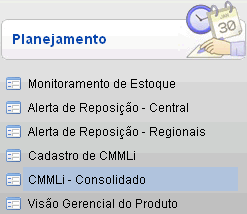
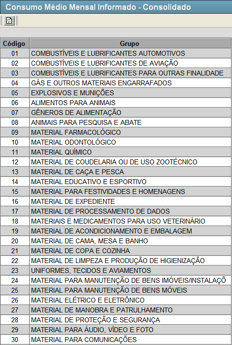
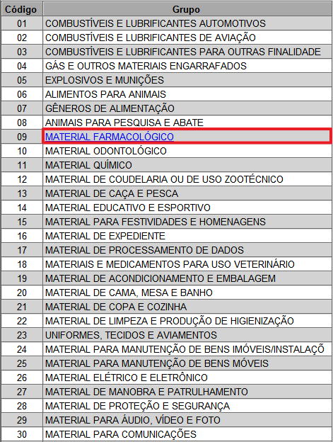
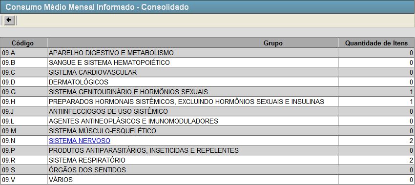
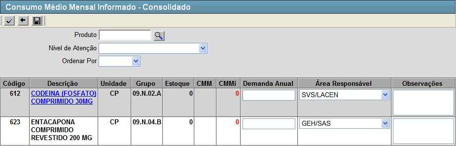

CMMLi - Consolidado [ Voltar ]Esta tela permite o usuário acessar informações do Consumo Médio Mensal Informado - Consolidado. O formulário "CMMLi - Consolidado" encontra-se dentro do menu "Programação - Planejamento".

Ao clicar no formulário, o sistema exibirá a seguinte tela:

1º Passo: selecione um dos grupos que aparecem na tela. Para selecionar basta clicar no nome do grupo (cada nome nesta tela é um link). Conforme imagem abaixo.  Ao clicar no link, você será redirecionado para a tela ilustrada abaixo.  Da
mesma forma que aconteceu na tela anterior, subgrupos do grupo
escolhido anteriormente estão listados nesta tela, assim como a
quantidade de itens cadastrados em cada subgrupo. 2º Passo: clique em algum subgrupo listado na tela. Você será redirecionado para a seguinte tela:
 3º Passo: configure os filtros da tela para localizar os produtos necessários. Você possui as seguintes opções:
4º Passo: informe os dados do produto. Preencha os campos Demanda Anual, Área Responsável e Observações. Logo após clique no botão  [Salvar] para armazenar as informações. [Salvar] para armazenar as informações. |
 [Pesquisar] para selecioná-lo por meio de uma listagem contendo todos os produtos cadastrados.
[Pesquisar] para selecioná-lo por meio de uma listagem contendo todos os produtos cadastrados.